Book of Matthew
When: January – Feburary 2016
Why: Seeking more. Saw my sinfulness at Winter Retreat and decided to investigate more in Christianity.
Highlight Verse: Matthew 9: 2-3 2 And behold, some people brought to him a paralytic, lying on a bed. And when Jesus saw their faith, he said to the paralytic, “Take heart, my son; your sins are forgiven.” 3 And behold, some of the scribes said to themselves, “This man is blaspheming.”
Thoughts: First time ever I felt like God was speaking to me. Tbh it was scary! I was able to identify myself with the paralytic and I need my friends’ help to deal with my “paralysis.” Because of God’s powerful word, I took my first step of faith even though I was not a Christian: I broke my newly signed lease and decided to move to a place closer to where my friends and leaders lived.
 
